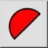
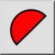
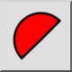
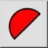

Område för båge/cirkel/ellips
Verktygsfält / ikon:
 

Meny: Info > Område för båge/cirkel/ellips
Genväg: I, C
Kommandon: acearea | ic
Detta är en automatisk översättning.
Verktygsfält / ikon:
 

Meny: Info > Område för båge/cirkel/ellips
Genväg: I, C
Kommandon: acearea | ic
Författare: Robert S.
Det här kommandot beräknar arean av bågar, cirklar, ellipser och elliptiska bågar och lägger eventuellt till informationen till det aktuella lagret i en ritning. Om du väljer någon annan typ av enhet visas en varning på kommandoraden.
För bågar finns det två alternativ för att beräkna areor, nämligen Segment eller Sektor. Arean av ett segment (eller skiva) är det område som avgränsas av bågen och två linjer som dras från bågens startpunkt och slutpunkt till bågens centrum. En sektors area är den area som avgränsas av bågen och en lina som dras från bågens startpunkt till dess slutpunkt.

Figur 1: Ett segment (skiva) och en sektor.
Alternativ
Det här kommandot har standardalternativen " Add measurement to drawing" och " Text Height".

Figur 2: Standardalternativ för Info
Oavsett om detta är avstängt eller inte, när du klickar på en båge, cirkel, ellips eller elliptisk båge visas informationen i kommandoradswidgeten.

Figur 3: Information som visas på kommandoraden
(Obs: Varje gång du startar ett infokommando är kryssrutan "Add measurement to drawing" alltid avmarkerad. Du måste komma ihåg att slå på den om du vill att informationen ska läggas till i ritningen).
Det lägger också till följande alternativ.

Figur 4: Tillagda alternativ
Läge:
Läget gäller endast för bågar.

Sektor: Det här läget returnerar sektorns area. Detta är användbart när
det används tillsammans med kommandot
"Polygonal area".
 Segment: Det här läget visar segmentets area.
Segment: Det här läget visar segmentets area.
Lägg till:
Enhet: Detta väljer om du vill lägga till en kopia av den uppmätta enheten till det aktuella lagret i ritningen.
Chord: Detta väljer om du vill att ackordet (sektor) eller radielinjerna (segment) ska läggas till i ritningen.
Längd: Som standard skrivs området alltid ut på ritningen. Med detta alternativ väljer du om du vill att extra information ska läggas till på ritningen.
För cirklar och hela ellipser är den extra informationen omkretsen. Här används mittpunkten som det nedre vänstra hörnet för den tillagda texten.

För cirkelbågar är den extra informationen bågens längd och längden på ackordet (i sektorläge) eller radien (i segmentläge).
För ellipser är den extra informationen bågens längd och längden på ackorden (i sektorsläge), eller avståndet från centrumpunkten till bågens startpunkt, följt av avståndet från centrumpunkten till bågens slutpunkt (i segmentläge).
Det nedre vänstra hörnet för den tillagda texten är bågens slutpunkt.